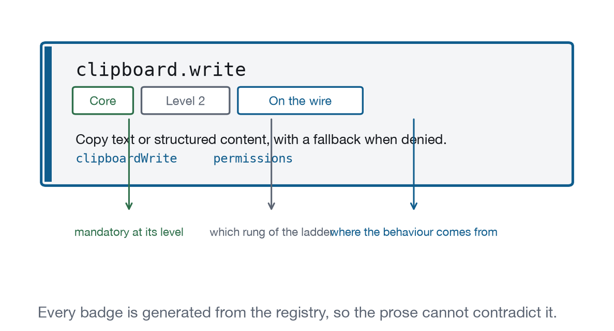
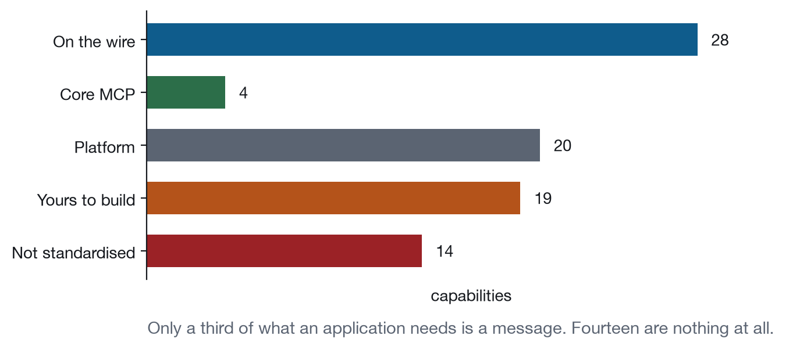

Chapter 1
The Capability Model
Eighty-nine named operations, four conformance levels, five kinds of ground, and one question you have to ask before using any of them.
An MCP application is a web page with most of the web taken away. No storage. No address bar. No window.open, no print, no camera without permission it did not grant itself. Four hundred pixels wide, inside a document it cannot see.
It is also a file you wrote. The model does not generate the view; your server predeclares it as a ui:// resource and a tool points at it. What the model controls is when that tool runs and what arguments it carries.
What the view has instead of the normal web is a message channel to the host, and anything the page cannot do alone it does by asking. That single arrangement explains most of what is strange about building here: the things you would normally call are now requests that can be refused, the refusals arrive asynchronously, and the party refusing them is one you cannot inspect.
So the question is which of a table’s normal behaviours survive in here. Sorting does. Copying does, with a fallback. Dragging a row out does not. “It depends on the host” is true and useless, so this book breaks the surface into eighty-nine named operations and attaches four facts to each.

Why namespaced identifiers?
Every capability has a stable identifier with a namespace: surface.resize, input.selection, clipboard.write, tool.invoke. Flat names are not used. The namespace is not decoration; it is what lets you scan an eighty-nine row index and find the five entries about files without reading any of them, and it is what lets a conformance report say “this host fails four input.* checks” instead of listing four unrelated sentences.
The identifiers are the book’s own. The extension does not define capability names, it defines messages, and one capability sometimes maps onto two messages while two capabilities sometimes share one. surface.close is the pair ui/notifications/request-teardown and ui/resource-teardown, which are a notification and a request pointing in opposite directions. Calling that one capability is a judgement, and the entry says which messages it means so you can disagree with the judgement without losing the facts.
What do the four levels mean?
Capabilities sit on a ladder of four cumulative levels, and the ladder is what turns “this host supports MCP Apps” into a claim somebody can act on. Support is not a boolean. A host that renders a chart beautifully and has no clipboard is a real and reasonable host, and so is one that does everything at Level 2 and nothing at Level 3, and an application needs to be able to tell them apart before it renders a control.
Level 1, Embedded. The application renders, reports its size, receives a theme, opens a link through the host, and can find out what it is running inside. This is the floor. A host at Level 1 can display a chart or a summary card. It cannot yet be trusted with a form.
Level 2, Interactive. Focus, keyboard, selection, clipboard, files, dialogs, and errors that recover. Everything at this level is about the application becoming a place where work happens.
Level 3, Native-Like. Display modes, spatial interaction, lifecycle awareness, persistence, history, media. This is where applications stop feeling like cards and start feeling like applications, and it is also where the standard runs out fastest.
Level 4, Agentic. Tools, streaming, model context, approval, and shared ownership of state. Nothing at this level has a counterpart in ordinary web development, because ordinary web pages do not have a second party that can edit the document while the user is typing in it.
Levels are cumulative claims. A host claiming Level 3 is asserting that all 67 Core capabilities at levels 1 to 3 behave as their entries describe. Appendix C turns that into a checklist you can run.
Core or Extended?
Core is mandatory at its level and accounts for 69 of the 89. Extended is optional at any level and accounts for the other 20. The distinction is a statement about your code as much as about the host: if you use an Extended capability your application has to keep working when it is absent, and the entry has to describe what “keep working” looks like.
Extended is a statement about your code, not the host’s. If you use clipboard.read or system.share, your application must still work when they are absent, and the entry says what that looks like.
Sixty-eight of the eighty-nine capabilities are Core. That ratio is not a target, it is what fell out of asking, for each one, whether an application could be recognisably itself without it.
Is this a protocol feature or my problem?
The ground badge answers it, and it is the single most useful thing on any entry, because the three answers lead to completely different work. A message means reading a specification and handling a refusal. A browser feature means writing ordinary front-end code. A gap means designing around an absence for the life of the product.
link.openCoreLevel 1On the wireDelegate external navigation instead of attempting it.
- Messages
ui/open-linkopenLinks- Ground
- The MCP Apps extension defines a message for it.
- Recipes
- Code and Diff Reviewer, Approval Center
- Demo
- lab-clipboard
That entry is on the wire. There is a message, the host answers it, the transcript pane shows it, and the failure mode is a rejected promise you can catch. Compare it with this one:
input.selectionCoreLevel 2PlatformSingle, additive, range, and select-all over text and objects.
- Ground
- The browser inside the sandbox provides it. No host round trip.
- Recipes
- Data Explorer, File Explorer, Spreadsheet, Workflow Builder, Code and Diff Reviewer, Monitoring Console
- Demo
- lab-input
Nothing on the wire at all. Selection inside your view is the browser doing what browsers do, and looking for a protocol feature to enable it is a way to lose an afternoon. And then there is the third kind:
clipboard.readExtendedLevel 2Not standardisedRead what the user has on the clipboard.
- Ground
- No standard mechanism exists yet. The entry carries a workaround.
- Recipes
- Spreadsheet
- Demo
- lab-clipboard
No mechanism, anywhere. Not in the extension, not in the browser for an opaque origin, not by asking the host nicely. The entry says what to do instead, and Appendix B collects all sixteen of these into one table.
The five grounds are:
| Ground | Meaning | Count |
|---|---|---|
| On the wire | The MCP Apps extension defines a message for it | 28 |
| Core MCP | The base protocol defines it and views inherit it | 4 |
| Platform | The browser inside the sandbox provides it, with no host round trip | 20 |
| Yours to build | The view implements it and nobody else can | 19 |
| Not standardised | No mechanism exists yet; the entry carries a workaround | 14 |
Those counts are generated from the registry, and the twenty-nine wire claims are checked against the specification text on every build. A build where the extension has renamed a message fails before the sentence describing it can go stale.

What do I check before using any of it?
hostCapabilities, in the ui/initialize result, before you draw anything. Every capability the host is willing to exercise on your behalf is in that object, and the absence of a field is itself the answer.
host.capabilitiesCoreLevel 1On the wireEnumerate what this host supports before using any of it.
- Messages
ui/initializehostCapabilitiesappCapabilitiesui/notifications/initialized- Ground
- The MCP Apps extension defines a message for it.
- Recipes
- Data Explorer
- Demo
- lab-handshake
The handshake is one request and one notification. The view sends ui/initialize with its own name, version, and capabilities. The host answers with its name, its capabilities, and a context object describing the environment. The view sends ui/notifications/initialized, and only then is the host allowed to send anything.
Everything the host is willing to do is in that answer. If openLinks is absent, the host will not open links, and a view that renders a link anyway is a view with a dead control in it. If serverTools is absent, your refresh button cannot work. If sampling is absent, the view cannot reach a model on its own and has to escalate to the conversation instead.
The important discipline is not checking. It is checking early. A capability that turns out to be missing at the moment the user presses the button produces an error message; the same capability checked during initialization produces an interface that never offered the button. The demonstration below takes capabilities away one at a time so you can watch the difference.
That is three lines in the handshake lab, and they run before anything is drawn:
Extracted from from apps/labs/lab-handshake/index.html
// A capability that is absent is not an error to report at the moment of
// use. It is a button that should never have been enabled.
$("#link").disabled = !hostCapabilities.openLinks;
$("#log").disabled = !hostCapabilities.logging;
$("#read").disabled = !hostCapabilities.serverResources;Recipe 1 goes one step further and checks at the point of use as well, because downloadFile failing there has a genuinely better answer than a disabled button:
Extracted from from apps/recipes/r01-data-explorer/index.html
$("#export").onclick = async () => {
if (!bridge.hostCapabilities.downloadFile) {
toast("This host cannot save files. Copy instead.");
return;
}The two are not in tension. Disable what has no fallback; offer the fallback where one exists. What is never right is a control that looks live, does nothing, and reports a protocol error to somebody who has no idea what a capability is.
Press “Become a very poor host” and reload. The view still renders its table. The link, log and read buttons are gone, and a chip says which capability each one needed.
Build Level 1 first
The four levels are cumulative, which means they are also an order of work, and the order is not the one most teams pick.
Most embedded applications are built by starting from a design and implementing whatever it needs. That produces a view that requires Level 3 on its first day and fails in every host that is not there yet, usually silently, because a missing capability does not error, it simply never arrives.
The order that works is the reverse. Build the Level 1 version first: it renders, it sizes itself, it follows the theme, and it is useful. Then add Level 2 and Level 4 behaviour as enhancements, each guarded by a capability check, each with a defined appearance when the capability is absent.
Every recipe in Part V is built that way, and the recipe entries carry a table saying what each one looks like at each level. That table is not documentation written afterwards. It is the design, written first, and it is the reason thirteen applications built against one emulator have a defensible claim to work somewhere else.
Where the badges come from
Everything in this chapter is machine readable. capabilities/registry.py holds one row per capability with its level, tag, ground, the specification messages behind it, the chapter that defines it, and the demonstration that exercises it. make registry writes it to JSON, and every artifact downstream reads that file: the badges on each entry, the index in Appendix A, the coverage matrix, the conformance checklists, the gap table.
One row, in full. This is the first entry in the registry, and every badge you will see on host.capabilities anywhere in the book is rendered from it:
Extracted from from capabilities/registry.py
("host.capabilities", 1, "core", "wire",
[("apps", "ui/initialize"), ("apps", "hostCapabilities"),
("apps", "appCapabilities"), ("apps", "ui/notifications/initialized")],
"ch01", "lab-handshake",
"Enumerate what this host supports before using any of it."),Reading left to right: the identifier, the conformance level, Core or Extended, where the behaviour comes from, the specification anchors that have to exist for the claim to hold, the chapter that defines it, the demonstration that exercises it, and the one-line summary. The fifth field is the one with teeth, because tools/check_claims.py greps the pinned specification text for every name in it.
Three things follow from that arrangement, and together they are why a registry is worth the setup cost over simply writing the facts into each chapter.
A chapter cannot contradict a badge, because a chapter cannot write one. The prose describes; the registry asserts.
A capability with no entry is a build warning, caught by the build and not by a reviewer. The tool.cancel entry in Chapter 20 exists because the build said it was missing.
And the specification claims are checkable. tools/check_claims.py greps the pinned specification text for all sixty-eight message names the registry claims exist, on every build. It also reports which of them are in the current draft but not in the last dated release, which is how the draft only badge gets onto an entry without anybody remembering to put it there.
What this book will not tell you
It will not tell you which hosts support what. That information has a half-life of about a month, and a book that carried it would be wrong by the time you read it. What it carries instead is a method: the capability identifiers, the checklists in Appendix C, and a conformance harness in the repository that any host can run against itself. The answer to “does Claude Desktop support input.dragBoundary” should come from a test run, not from a paragraph written in August.
It will also not tell you that everything is fine. Sixteen capabilities that recognisable applications need have no mechanism at all, and ten of them are Core. The honest version of this book says so on the entry, on the index, and in an appendix, and then shows you what people do instead.